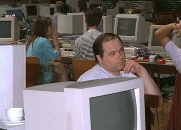

This machine is dedicated in memory to Klaus 'crest' Burkert who died in April, 4th 2001 aged 33 by a cardiac infarction.

He developed some Amiga Hardware like Ariadne I & II, PicassoII & IV and many other Mac cards as well. Klaus personally donated the Ariadne NIC in kullervo on a Linux meeting in Oldenburg. He was really from the bottom of his heart a true Amiga-Fan and gave finally his life for it. He worked night & day at Village Tronic to develop new hardware, wrote drivers, and communicated with community, and having no holidays for years - always stressed, always busy, always helpful. - Ingo Juergensmann Fri Jul 5 15:09:07 CEST 2002